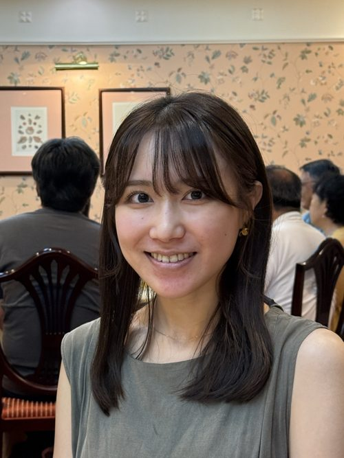
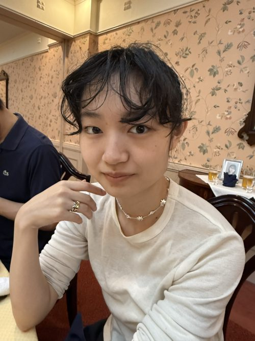
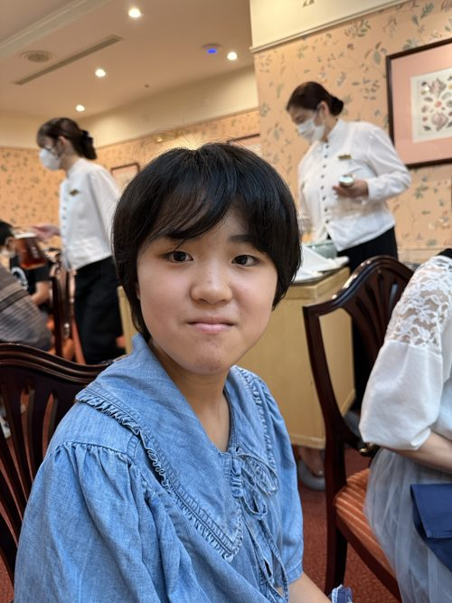
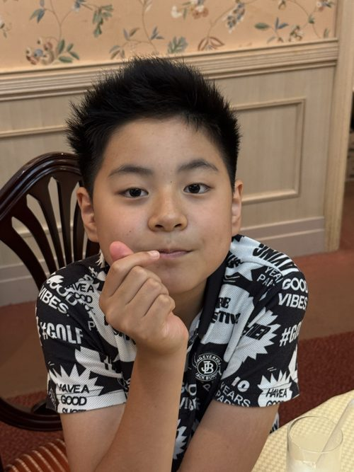

石黒トヱさんの血族（推定含む）
婚姻により一族に加わった方
故人（†は没年月日・享年）
＝ 婚姻 （ ）内は干支
家 系 図
― 誕生日一覧より作成 ―
-
石黒トヱ
1898.8.24 （戌）
†1997.1.28（98歳）
-
石黒一雄
1922.10.29 （戌）
†2021.8.13（98歳）
静子
1924.12.30 （子）
†2020.8.27（95歳）
-
裕子
1949.11.16 （丑）
†2023.10.24（73歳）
-
-
葉子
1973.4.11 （丑）
†2026.4.2（52歳）

美乃莉
2002.8.19 （午）
-

希妃
2003.12.18 （未）
-
大東美穂
1978.5.10 （午）
2025.5.23 中島姓に

愛果
2014.1.24 （午）

蒼弥
2015.9.17 （未）
-
※ 石黒トヱ－一雄の親子関係、および知子・真理子が一雄・静子夫妻の子（純一のきょうだい）である点は、一覧表の並びからの推定です。
※「澪」（2022.10.4生）は原本の文字が判読しづらいため、名前が異なる可能性があります。
※ 大東美穂は2025.5.23に中島陽介と婚姻し中島姓となっています（愛果・蒼弥の続柄は原本の記載に基づき美穂の子として記載）。